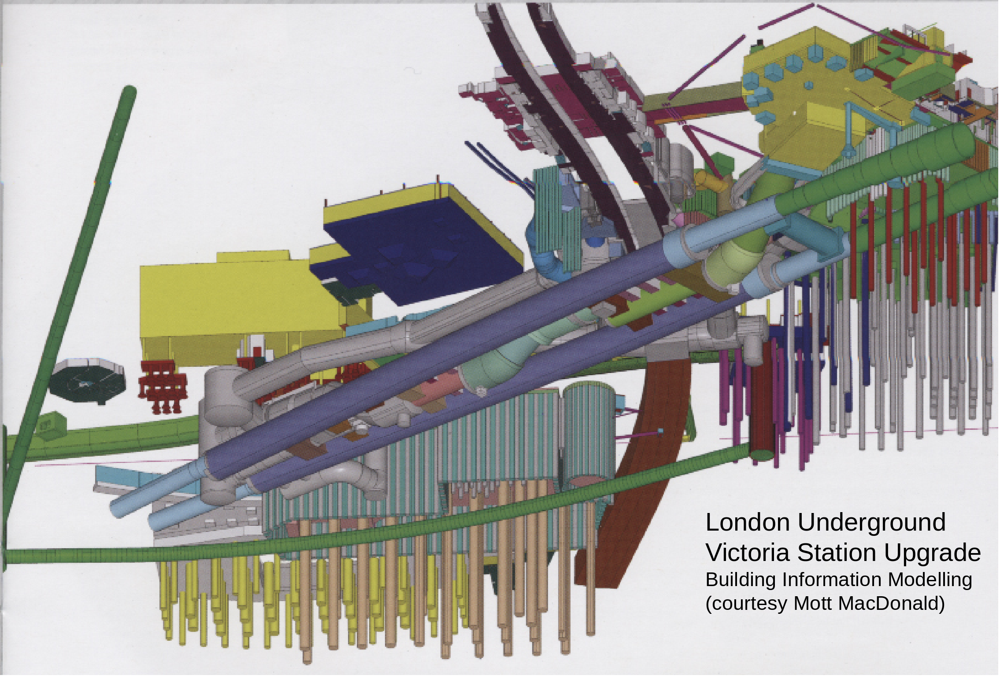
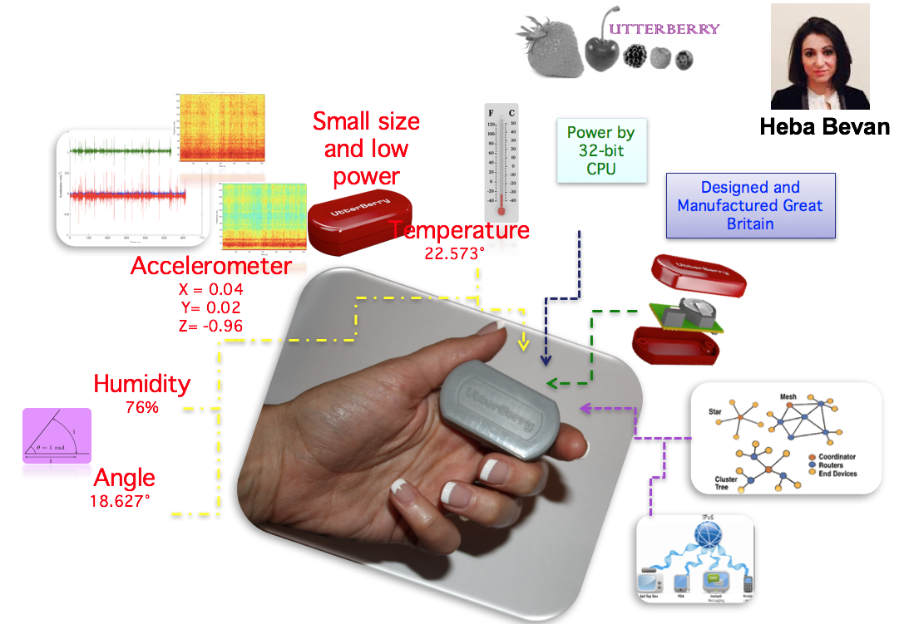

Data analytics, sensing and visualisation for smart cities
Krishna Kumar, kks32@cam.ac.uk
Department of Engineering, University of Cambridge


PUC-Rio, Brasil. 25 May 2017
UK National infrastructure plan
- £466B for the next generation of infrastructure by 2020.
High quality infrastructure is essential for supporting productivity growth. Delivering the right infrastructure at a local, regional and national level, across the UK, is […] key to the government’s long-term economic plan.

Victoria station upgrade
Sensing the infrastructure

Sensing the infrastructure

Monitoring applications
Monitoring of piles

Monitoring of tunnels

Monitoring of arches

Monitoring of shaft

Wireless sensor networks
WSN evolution

Utterberry
Utterberry sensors at Eleanor Street
Data analysis from Utterberry sensors

Tunnel after dewatering
Wireless sensing & noise

WSN - Open standards

Cloud based WSN
- Current WSN development requires complicated software set up
- Adds to steep learning curve
- Longer development cycle
- Develop firmware using any browser on any device
- Download compiled firmware
- Deploy firmware directly to your sensor network
Hypercat
Hypercat is an open, lightweight JSON-based hypermedia catalogue format for exposing collections of uniform resource identifiers.

Hypercat - PAS212
- PAS 212 specifies a common catalogue format that clients can use to discover data in servers that they can use.
- PAS intentionally does not set out to solve all the challenges of data interoperability.
- A `href` may be a URL (usually a URI)
- Metadata
rel-value
e.g.,{"rel":"urn:X-hypercat:rels:hasColour","val":"red"}
Fiber optic monitoring
Distributed Brillouin Sensing

Post Office tunnel

Data analysis - tunnel movement
London Bridge Station
London Bridge Station - Overview

London Bridge Station - Piling


Sensing
- Automatic Total Station (ATS) - absolute displacement of targets placed on the masonry structure
- Strain sensing fibre optics (FO) - continous strain profile and crack size
- Laser scanner - 3D understanding of structural movements
Automatic Total Station
ATS - Data analysis
It is difficult to understand the response mechanism of the structure. Small cracks are observed at quarter span – do the movements correlate with the cracks?
Laser Scan
Piecewise alignment method (PAM): finds the closest distances between points and shapes from both clouds. Uses this as an initial estimate for fitting small components of one cloud to the other cloud with minimum error. Defines movement in (X,Y,Z).
Laser Scan - Data analysis
Laser Scan - Data interpretation

Fiber Optics - Data interpretation
People movement

Smart city
Smart (monitoring complex) infrastructure

Queries
- At London Bridge Arch E951 area, has there been a black alarm triggered during the piles constructed 12.13-01.14?
- Is there a crack opening greater than 5mm in the arches, when the settlement values reached 50mm?
- What is the maximum displacement observed during tunneling (or other construction activity) within x meters from the pile.
- Number of data readings required for a strain profile – within a tolerance of X?
- Effect of analyzer X on scatter / noise in soil layer Y
Queries: Big, Fast and Rich
Relational database
Humidity? Vibration? 3D point cloud data? …
PostGIS
- Geographic objects to the PostgreSQL object-relational database
- Geometry types for Points, LineStrings, Polygons, MultiPoints, MultiLineStrings, MultipPolygons and GeometryCollections.
- Spatial operators for determining geospatial measurements like area, distance, length and perimeter.
- Spatial operators for determining geospatial set operations, like union, difference, symmetric difference and buffers (provided by GEOS).
v.to.db map=roads option=length type=line col=linelength units=me
Spatio-Temporal Query
- Semantic analytics tools have primarily focused on thematic relationships, but spatial and temporal relationships are often critical components in analytical domains.
- Current GIS and spatial database technology does not support complex thematic analytics operations.
- GIS - modelling and analysing spatial and temporal relationships
- Thematic entities and their relationships are not explicitly and independently represented, making analysis of these relationships difficult.
CityGML
- Open data model and an XML-based format for the storage and exchange of data.
- Common information model for the representation of sets of 3D urban objects

CityGML
1000
1080
model/vrml
http://www.some-3d-library.com/3D/furnitures/Sensor434.wrl
5793898.77 3603845.54 44.8
Building Information Modelling
Industry Foundation Class
100.0
100.0
100.0
Smart cities standard
- Smart cities standard (PAS 182) offers a handful of generic concepts (such as place, observation, metric etc.) to formulate a common language for linking data across organizations in a city.
- The main goal is to seamlessly integrate information from multiple organisations using Linked Data (Semantic Web technology) that can be shared and edited.
- Different from BIM, Smart Cities allow for the sharing of critical but less tangible aspects that relate to the data: such as related Assumptions and Objectives.
Linked Data - Semantic Web

Linked Data - example
Resource Description Framework
Utterberry measures
Displacement.
Linked Data - Concept model

Linked Data - Time Slices

Temporal RDF

Temporal RDF extends the RDF statement from a triple to a quad where the fourth element is the valid time of the RDF statement
Graph processing

Graph optimisation

Big Data - City scale modelling
Gerry Casey, Bing Yu, Kenichi Soga, Peter Guthrie, Elisabete Silva, Krishna Kumar and Mietek Bak
SQL v NoSQL - Google directions API
London journey times

London journey times

London journey times

Traffic saturation curves
MapReduce v In-memory
MapReduce
- Batch processing
- Larger set of data to extract features and correlations
In-memory
- Real-time predictions
- GraphX: Graph parallel computing

Agent based modelling (ABM)
Graph data structure
ABM time step
Spatial v Temporal complexity
Spatial

Temporal

ABM Architecture
- Decentralised data structures
- Graph size: ~250k nodes and ~800k edges
- ~1.5 GB (.gml) to 43 MB (.json.gz)
Dynamic computations

- Shortest path at time 't'
- Shortest path considering emissions
- Shortest path re-computation in response to an event
- 1 million agents in ~ 1 hour
Agent based modelling (ABM)

Agent based modelling
Cellular Automata (CA)
CA - Road degradation
Big Data visualisation
Tile based visualisation
WebGL - GLSL (Shading language)
GPU

Super computing

Alien Isolation
Thank you!!
Krishna Kumar, kks32@cam.ac.uk